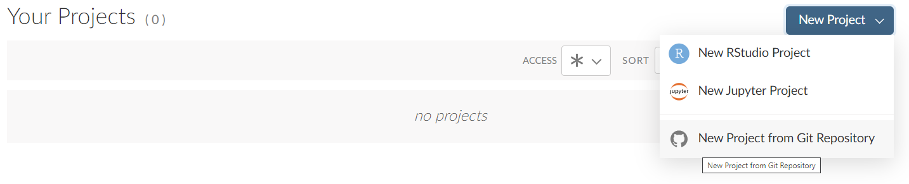
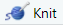
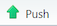
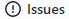
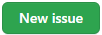
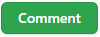
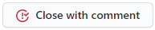

Syftet med den här laborationen är att träna på kursverktygen. Vi kommer gå igenom en rad steg som ni inte förväntas förstå i detalj än. Det viktiga är att lyckas följa instruktionerna, förståelsen återkommer vi till. Uppgiften går ut på att
Detta är det vanliga tillvägagångssättet vid inlämning av laborationer i kursen.
Starta en webbläsare, gå till https://github.com/MT3003-ST22 och logga in. Kontrollera att det finns en länk lab1-xxx, där xxx är ditt användarnamn. Saknas denna länk kan det bero på att
Är du osäker, fråga på kursens Discord.
Finns länken där loggar du in på RStudio Cloud. I vänstermarginalen under Spaces hittar du kursens arbetsyta MT3003-ST22, klicka på den. Två saker att tänka på
Du skall nu hämta underlaget från GitHub i form av ett projekt. Klicka på nedåtpilen till höger om “New Project” och välj “New Project from Git Repository” som nedan. 
I dialogrutan som dyker upp fyller du i
https://github.com/MT3003-ST22/lab1_xxx.git där du ersatt
xxx med ditt användarnamn. Laborationsunderlaget hämtas nu
och RStudio startas upp.
Projektet är en i princip färdig illustration av prisutvecklingen på ettor i stockholms innerstad, din uppgift är att göra några mindre förändringar som du sedan publicerar på GitHub.
Öppna filen Booli_ettor.Rmd genom att klicka på den i
Files-fliken, filen kommer då få ett eget fönster ovanför
Console-fönstret. Detta är en R Markdown-fil (ändelse
.Rmd), en textfil som blandar Markdown med
instruktioner skrivna i R-kod.
Om du klickar på  kommer dokumentet konverteras till en webb-sida som visas i ett nytt fönster (välj “Preview in Viewer Pane” under kugghjulet till höger om om du inte vill öppna ett nytt fönster). Spendera lite tid med att jämföra källkoden med resultatet.
Byt dokumentets författare (fältet author:) till
ditt eget namn och dokumenttypen (fältet output:) till
github_document.
Dokumentets figur visar datum (soldDate) på
x-axeln och slutpris (soldPrice) på
y-axeln. Ändra detta så att y-axeln istället
visar pris per kvadratmeter (soldPrice / livingArea). Gör
en motsvarande ändring av texten på y-axeln.
Tryck på och försäkra dig att allt ser bra
ut. Kontrollera även att det dykt upp en fil Booli_ettor.md
(en Markdown fil som passar bra att publicera på GitHub) samt en mapp
Booli_ettor_files i Files-fönstret.
Du har nu två versioner av filen Booli_ettor.Rmd, den
versionen som du hämtade från GitHub (och som ligger kvar där) och den
modifierade versionen i ditt projekt på RStudio Cloud. På RStudio Cloud
har du även genererat en del nya filer. Du uppdaterar filerna på GitHub
till den nya versionen i två steg
Ett fönster som ser ut som nedan öppnas med en lista på filer som förändrats (beroende på vad du gjort i projektet kan du ha fler filer). Filerna är av två slag, de som föregås av fanns med i projektets föregående version (i det här fallet, den du hämtade från GitHub) men har modifierats, de som föregås av finns inte med i någon bekräftad version av projektet.
Kryssa rutorna i kolumnen Staged framför filerna
Booli_ettor.md, Booli_ettor.Rmd och mappen
Booli_ettor_files.
Beskriv förändringarna du gjort i fältet Commit message. Håll det kort, t.ex. “Bytt författarnamn” istället för “Bytt författarnamn från Kalle Svensson till Nisse Nilsson”.
Klicka på knappen Commit. Stäng fönstret som öppnas.
Du har nu uppdaterat projektet till en ny version på ditt eget RStudio Cloud-konto. För att göra förändringarna tillgängliga för andra behöver du även uppdatera den version av projektet som finns på GitHub. Detta gör du enkelt genom att klicka på knappen  uppe till höger.
Kontakta en handledare på Discord om det uppstår problem med autentiseringen (användarnamn/lösenord) mot GitHub i detta steg.
Vi är inte riktigt klara än. När du besöker ett projektarkiv
(repository) på GitHub visas innehållet i filen README.md
om den finns. Denna skall vara skriven i Markdown syntax. I RStudio
Cloud, skapa en ny fil med File → New File → Markdown
File och spara den som README.md. Du skall nu
fylla på filen med följande:
Booli_ettor.md.Använd preview för att kolla att allt ser bra ut och skicka vidare filen till GitHub på samma sätt som ovan (Commit och Push).
Kontrollera nu att det ser bra ut även på GitHub
(https://github.com/MT3003-ST22/lab1_xxx). När du är nöjd
meddelar du detta genom att posta en Issue. Gå till
https://github.com/MT3003-ST22/lab1_xxx/issues (eller
klicka på fliken ) och välj . Fyll i “Laboration 1 redo för rättning!” i
ämnesraden och klicka Submit new issue. Din laboration är nu
inlämnad!
Dagen efter deadline kommer du få tillgång till en kursares
laboration, den kommer dyka upp under
https://github.com/MT3003-ST22/. Du skall granska två
saker
Booli_ettor.md från README.md?Resultatet av granskningen rapporterar du genom att lämna en kommentar till kamratens issue senast midnatt onsdagen efter deadline. OBS: skicka kommentaren med , inte .